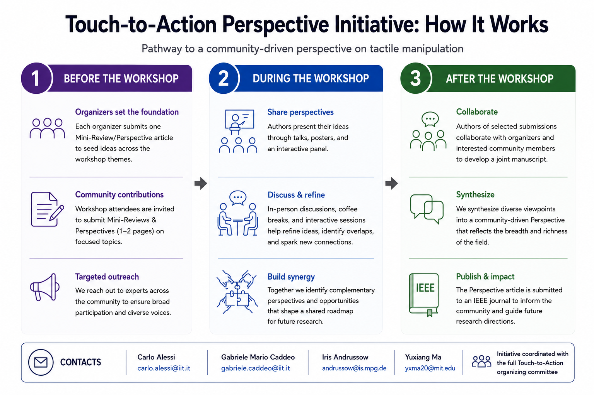
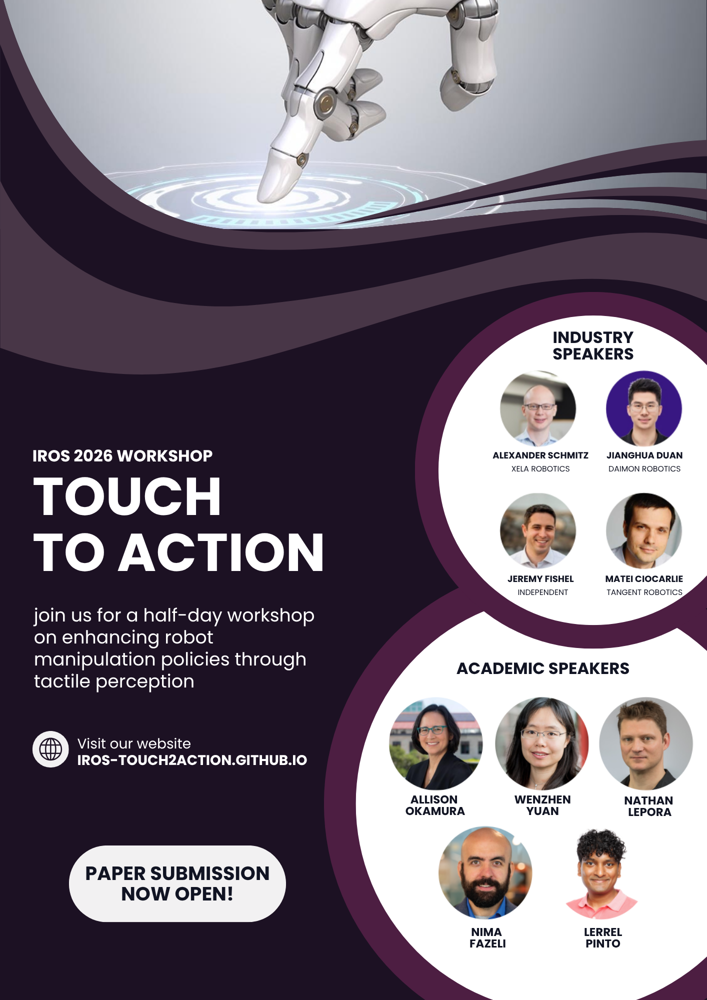

Invited Speakers (Keynote Presentations)
Allison Okamura
Stanford University

Wenzhen Yuan
University of Illinois Urbana-Champaign
Nathan Lepora
University of Bristol
Nima Fazeli
University of Michigan

Lerrel Pinto
New York University
Pittsburgh, Pennsylvania, USA • October 1, 2026 • IEEE/RSJ International Conference on Intelligent Robots and Systems (IROS 2026).
Touch is fundamental to human interaction with the world, yet in robotics it remains far less developed and standardized than vision, proprioception, or language-based AI. This workshop brings together complementary perspectives from across the tactile sensing and manipulation pipeline: from biological inspiration and sensor design to simulation, perception, learning, control, and real-world applications. It offers a vertical roadmap covering sensor technologies, design and fabrication, simulation for sensor optimization and policy learning, deep learning for tactile perception, multimodal fusion, and tactile feedback for robot control, with applications highlighted in manufacturing and healthcare.
The program features Keynote Talks, an Industry Session, a Panel Discussion, Lightning Talks, and Poster Presentations, creating an interactive forum for the robotics and AI communities to exchange ideas and discuss future directions for tactile intelligence.
Functional principles of human and animal touch inspiring artificial tactile systems.
How does biological touch work, and how does it inspire artificial tactile systems?
Exploring optical and magnetic sensing, design trade-offs, materials, morphology, and system integration.
How can we design and integrate tactile sensors for real-world robotic applications?
Which transduction method is most appropriate for a given application?
From high-fidelity FEM modeling to real-time simulators — bridging the sim-to-real gap in tactile sensing and control.
How can we simulate tactile sensors and their interaction with the environment to enable sim-to-real transfer?
How can we achieve effective yet tactile simulations? What is missing?
Learning from tactile data — domain adaptation, and multimodal fusion with vision and proprioception.
How should tactile data be processed to extract meaningful information?
How can we fuse tactile data with other modalities?
Enhancing multimodal control policies in imitation learning and reinforcement learning through tactile sensing.
When is touch not just useful, but essential for learning and manipulation?
Original research across the workshop themes. Accepted papers will be selected for Lightning Talks or Poster presentations. XELA Robotics will present a Best Paper Award to an outstanding regular paper.
OpenReview Submission →Showcase your tactile sensors, hands, or manipulation systems in live or video demonstrations. Please inform us so we can accommodate your setup and provide any necessary resources (e.g., space, equipment).
Critical synthesis of a focused research topic amoung the workshop areas that summarizes recent advances, highlight open challenges, and point to emerging trends. Authors of promising mini-reviews may be invited to collaborate with the organizers on the Touch-to-Action Perspective Initiative.
OpenReview Submission →Selected submissions will serve as the foundation for a community-driven Perspective article on the role of tactile sensing for robot manipulation, coordinated by the workshop organizers after IROS 2026. Participation in the collaborative article is voluntary. Authors of selected submissions will be invited to contribute to the joint manuscript, which will synthesize complementary viewpoints into a coherent perspective on the future of tactile sensing for robotic manipulation. The final perspective will be submitted to an IEEE journal.
Guidelines for Mini-Reviews and Perspectives

To support broader participation, DAIMON Robotics will sponsor the participation of one student who submits a paper to the workshop and self-identifies as belonging to a group or circumstance underrepresented in robotics and AI. Eligible authors can apply via the form after submitting their paper.
Application formAhead of the workshop, we are running a series of online Young Speakers talks (~10-15 min + Q&A) so early-career researchers can present their work, connect with other labs, and spark new collaborations. Interested? Post in the #talks channel of our Slack; sessions are scheduled once enough participants express interest.
Join the Slack →
Share our workshop flyer with your group and mailing lists. Click the flyer to open the full-resolution version. To stay in the loop and meet other participants ahead of the workshop, join our community Slack channel.
Stanford University
University of Illinois Urbana-Champaign
University of Bristol
University of Michigan
New York University

CEO, XELA Robotics
Chief Science Officer, Tangent Robotics
CEO, Daimon Robotics
Touch & Manipulation Expert
Questions, sponsorship, or accessibility requests? Contact us!
© IROS 2026 Touch-to-Action Workshop Organizers.


{kind=link}